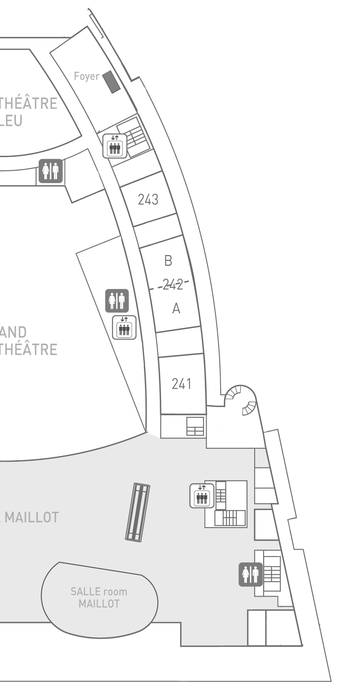

Twitter
“@mdgreenb Thinking I'll do a Mountain Lion clean install during the week between the #chi2013 deadline and classes. Also, new phone then.”
--@Noleli
“Should @acmchi2012 have said "Hey y'all" or "tout le monde" when announcing the #chi2013 cfp http://chi2013.acm.org/cfp-papers-notes.shtml ?”
--@DrAnnaLCox
“In case you didn't notice, the #chi2013 cfp is up! #cscw2013 @sigchi ”
--@clifflampe
“I'm thrilled to be joining the faculty of Stanford's Computer Science department!”
--@msbernst
“Many people's lectures make me feel we don't know anything. Stu's lecture today made me feel we have capacity to know everything. #chi2012”
--@edchi
“@CHIFilter #chi2011 has begun! Follow @CHIFilter and @ reply this account for your CHI-specific tweets.”
--@CHIFilter